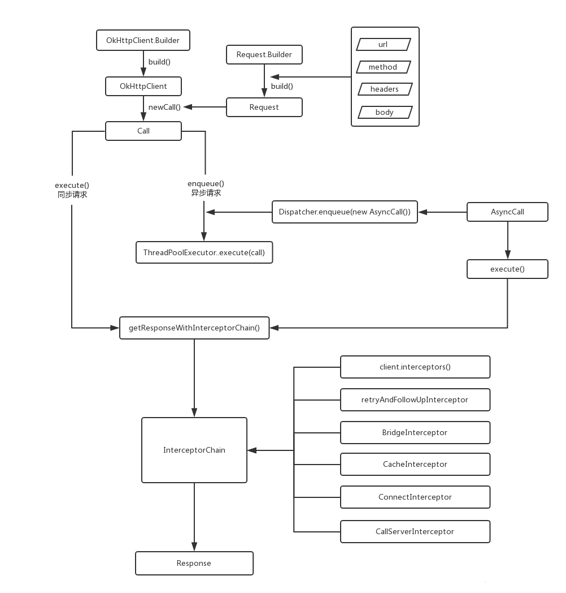

OkHttp网络库代码阅读笔记 01

OkHttp网络库代码阅读笔记 01
最近闲来无事，无聊的研究了一下Android开发常用的OkHttp，零散的记录一下相关的内容，有些部分直接照搬其它文章的图文，因为这些文章写得更清楚。
高能警告：直接撸设计优秀的开源工程源码，小撸伤身，大撸伤心。
OkHttp 4.x项目从 Java 迁移到了 Kotlin。喜欢研究Java代码的可以阅读OkHttp 3.14.6版本
OkHttp 4.x upgrades our implementation language from Java to Kotlin and keeps everything else the same. We’ve chosen Kotlin because it gives us powerful new capabilities while integrating closely with Java. We spent a lot of time and energy on retaining strict compatibility with OkHttp 3.x. We’re even keeping the package name the same: okhttp3!
OkHttp的Builder模式
The builder pattern is a design pattern designed to provide a flexible solution to various object creation problems in object-oriented programming. The intent of the Builder design pattern is to separate the construction of a complex object from its representation.
关于Builder模式的设计实现，可以Google一下，资料很多。大家自行补充。 首先我们从OkHttp的使用开始。
Okhttp常用的功能
- 1.同步Get请求
OkHttpClient okHttpClient = new OkHttpClient();
try {
Request request = new Request.Builder()
.url("url")
.build();
Call call = okHttpClient.newCall(request);
Response response = call.execute();
} catch (Exception e) {
}
- 2.异步Get请求
Request request = new Request.Builder()
.url("url")
.build();
Call call = okHttpClient.newCall(request);
call.enqueue(new Callback() {
@Override
public void onFailure(Call call, IOException e) {
//请求失败
}
@Override
public void onResponse(Call call, Response response) throws IOException {
//请求成功
}
});
- 3.同步Post请求
try {
MediaType JSON = MediaType.parse("application/x-www-form-urlencoded; charset=utf-8");
String str = "通信数据";
Request request = new Request.Builder().url("url").post(RequestBody.create(JSON, str)).build();
Call call = okHttpClient.newCall(request);
Response response = call.execute();
} catch (Exception e) {
}
- 4.异步Post请求
MediaType JSON = MediaType.parse("application/x-www-form-urlencoded; charset=utf-8");
String str = "通信数据";
Request request = new Request.Builder().url("url").post(RequestBody.create(JSON, str)).build();
Call call = okHttpClient.newCall(request);
call.enqueue(new Callback() {
@Override
public void onFailure(Call call, IOException e) {
//请求失败
}
@Override
public void onResponse(Call call, Response response) throws IOException {
//请求成功
}
});
- 5.Post提交文件
MediaType fileMediaType = MediaType.parse("text/x-markdown; charset=utf-8");
Request request = new Request.Builder()
.url("url")
.post(RequestBody.create(fileMediaType, new File("/a.png")))
.build();
Call call = okHttpClient.newCall(request);
call.enqueue(new Callback() {
@Override
public void onFailure(Call call, IOException e) {
//请求失败
}
@Override
public void onResponse(Call call, Response response) throws IOException {
//请求成功
}
});
- 6.Post提交from表单
MediaType fileMediaType = MediaType.parse("text/x-markdown; charset=utf-8");
Request request = new Request.Builder()
.url("url")
.post(new FormBody.Builder().add("key", "value").build())
.build();
Call call = okHttpClient.newCall(request);
call.enqueue(new Callback() {
@Override
public void onFailure(Call call, IOException e) {
//请求失败
}
@Override
public void onResponse(Call call, Response response) throws IOException {
//请求成功
}
});
- 7.文件字符串复合提交
MediaType fileMediaType = MediaType.parse("image/png");
RequestBody requestBody = RequestBody.create(fileMediaType, new File("sd/mnt/1.png"));
MultipartBody multipartBody = new MultipartBody.Builder()
.setType(MultipartBody.FORM)
.addPart(
Headers.of("Content-Disposition", "form-data; name=\"title\""),
RequestBody.create(null, "文字")//这样可以直接添加数据，无需单独创建RequestBody
)
.addPart(
Headers.of("Content-Disposition", "form-data; name=\"image\""),
RequestBody.create(fileMediaType, new File("sd/mnt/1.png"))//这样可以直接添加文件，无需单独创建RequestBody
)
.addFormDataPart("key", "value")//添加表单数据
.addFormDataPart("file", "fileName", requestBody)
.build();
Request request = new Request.Builder()
.url("url")
.post(multipartBody)
.build();
Call call = okHttpClient.newCall(request);
call.enqueue(new Callback() {
@Override
public void onFailure(Call call, IOException e) {
//请求失败
}
@Override
public void onResponse(Call call, Response response) throws IOException {
//请求成功
}
});
- 8.拦截器使用
OkHttpClient okHttpClient = new OkHttpClient.Builder()
.addInterceptor(new MyInterceptor())
.build();
MediaType fileMediaType = MediaType.parse("image/png");
RequestBody requestBody = RequestBody.create(fileMediaType, new File("sd/mnt/1.png"));
MultipartBody multipartBody = new MultipartBody.Builder()
.setType(MultipartBody.FORM)
.addFormDataPart("key", "value")//添加表单数据
.addFormDataPart("file", "fileName", requestBody)
.build();
Request request = new Request.Builder()
.url("url")
.post(multipartBody)
.build();
Call call = okHttpClient.newCall(request);
call.enqueue(new Callback() {
@Override
public void onFailure(Call call, IOException e) {
//请求失败
}
@Override
public void onResponse(Call call, Response response) throws IOException {
//请求成功
}
});
}
/**
* 拦截器
*/
public class MyInterceptor implements Interceptor {
@Override
public Response intercept(Chain chain) throws IOException {
Request request = chain.request();
Response response = chain.proceed(request);
Log.d("TAG", "请求返回数据为：" + response.body().string());
return null;
}
}
以上代码来自于框架流程篇
OkHttp的架构

结合架构图和调用代码，可以看出OkHttp使用中用户需要创建的对象有如下几个：
- OkHttpClient 客户端对象：这个是整个OkHttp的核心管理类，所有的内部逻辑和对象归OkHttpClient统一来管理，它通过Builder构造器生成，构造参数和类成员很多，这里先不做具体的分析。
- Request 请求对象：Request是我们发送请求封装类，内部有url, header , method，body等常见的参数
- Response 请求结果对象：Response是请求的结果，包含code, message, header,body ；这两个类的定义是完全符合Http协议所定义的请求内容和响应内容。
- RealCall implements Call 请求控制器，用于执行request：负责请求的调度（同步的话走当前线程发送请求，异步的话则使用OkHttp内部的线程池进行）；同时负责构造内部逻辑责任链，并执行责任链相关的逻辑，直到获取结果。虽然OkHttpClient是整个OkHttp的核心管理类，但是真正发出请求并且组织逻辑的是RealCall类，它同时肩负了调度和责任链组织的两大重任
- Callback 接收回调使用
- Interceptor 拦截器接口：OkHttp的核心逻辑
OkHttp源码分析
我们以普通的get请求为例，对OkHttp进行分析。
public class GetExample {
OkHttpClient client = new OkHttpClient();
String run(String url) throws IOException {
Request request = new Request.Builder()
.url(url)
.build();
try (Response response = client.newCall(request).execute()) {
return response.body().string();
}
}
public static void main(String[] args) throws IOException {
GetExample example = new GetExample();
String response = example.run("url");
System.out.println(response);
}
}
我们逐个分析一下。 OkHttpClient client = new OkHttpClient();内部执行了哪些逻辑？我们看下源码
open class OkHttpClient internal constructor(
builder: Builder
) : Cloneable, Call.Factory, WebSocket.Factory {
constructor() : this(Builder())
init {
if (connectionSpecs.none { it.isTls }) {
this.sslSocketFactoryOrNull = null
this.certificateChainCleaner = null
this.x509TrustManager = null
this.certificatePinner = CertificatePinner.DEFAULT
} else if (builder.sslSocketFactoryOrNull != null) {
this.sslSocketFactoryOrNull = builder.sslSocketFactoryOrNull
this.certificateChainCleaner = builder.certificateChainCleaner!!
this.x509TrustManager = builder.x509TrustManagerOrNull!!
this.certificatePinner = builder.certificatePinner
.withCertificateChainCleaner(certificateChainCleaner!!)
} else {
this.x509TrustManager = Platform.get().platformTrustManager()
this.sslSocketFactoryOrNull = Platform.get().newSslSocketFactory(x509TrustManager!!)
this.certificateChainCleaner = CertificateChainCleaner.get(x509TrustManager!!)
this.certificatePinner = builder.certificatePinner
.withCertificateChainCleaner(certificateChainCleaner!!)
}
verifyClientState()
}
}
首先我们注意到OkHttpClient类前面用open声明。在Kotlin中，所有的类默认都是final的。如果你需要允许它可以被继承，那么你需要使用open声明。OkHttpClient类的构造函数constructor() : this(Builder())直接使用Builder()
class Builder constructor() {
internal var dispatcher: Dispatcher = Dispatcher()
internal var connectionPool: ConnectionPool = ConnectionPool()
internal val interceptors: MutableList<Interceptor> = mutableListOf()
internal val networkInterceptors: MutableList<Interceptor> = mutableListOf()
internal var eventListenerFactory: EventListener.Factory = EventListener.NONE.asFactory()
internal var retryOnConnectionFailure = true
internal var authenticator: Authenticator = Authenticator.NONE
internal var followRedirects = true
internal var followSslRedirects = true
internal var cookieJar: CookieJar = CookieJar.NO_COOKIES
internal var cache: Cache? = null
internal var dns: Dns = Dns.SYSTEM
internal var proxy: Proxy? = null
internal var proxySelector: ProxySelector? = null
internal var proxyAuthenticator: Authenticator = Authenticator.NONE
internal var socketFactory: SocketFactory = SocketFactory.getDefault()
internal var sslSocketFactoryOrNull: SSLSocketFactory? = null
internal var x509TrustManagerOrNull: X509TrustManager? = null
internal var connectionSpecs: List<ConnectionSpec> = DEFAULT_CONNECTION_SPECS
internal var protocols: List<Protocol> = DEFAULT_PROTOCOLS
internal var hostnameVerifier: HostnameVerifier = OkHostnameVerifier
internal var certificatePinner: CertificatePinner = CertificatePinner.DEFAULT
internal var certificateChainCleaner: CertificateChainCleaner? = null
internal var callTimeout = 0
internal var connectTimeout = 10_000
internal var readTimeout = 10_000
internal var writeTimeout = 10_000
internal var pingInterval = 0
internal var minWebSocketMessageToCompress = RealWebSocket.DEFAULT_MINIMUM_DEFLATE_SIZE
internal var routeDatabase: RouteDatabase? = null
internal constructor(okHttpClient: OkHttpClient) : this() {
this.dispatcher = okHttpClient.dispatcher
this.connectionPool = okHttpClient.connectionPool
this.interceptors += okHttpClient.interceptors
this.networkInterceptors += okHttpClient.networkInterceptors
this.eventListenerFactory = okHttpClient.eventListenerFactory
this.retryOnConnectionFailure = okHttpClient.retryOnConnectionFailure
this.authenticator = okHttpClient.authenticator
this.followRedirects = okHttpClient.followRedirects
this.followSslRedirects = okHttpClient.followSslRedirects
this.cookieJar = okHttpClient.cookieJar
this.cache = okHttpClient.cache
this.dns = okHttpClient.dns
this.proxy = okHttpClient.proxy
this.proxySelector = okHttpClient.proxySelector
this.proxyAuthenticator = okHttpClient.proxyAuthenticator
this.socketFactory = okHttpClient.socketFactory
this.sslSocketFactoryOrNull = okHttpClient.sslSocketFactoryOrNull
this.x509TrustManagerOrNull = okHttpClient.x509TrustManager
this.connectionSpecs = okHttpClient.connectionSpecs
this.protocols = okHttpClient.protocols
this.hostnameVerifier = okHttpClient.hostnameVerifier
this.certificatePinner = okHttpClient.certificatePinner
this.certificateChainCleaner = okHttpClient.certificateChainCleaner
this.callTimeout = okHttpClient.callTimeoutMillis
this.connectTimeout = okHttpClient.connectTimeoutMillis
this.readTimeout = okHttpClient.readTimeoutMillis
this.writeTimeout = okHttpClient.writeTimeoutMillis
this.pingInterval = okHttpClient.pingIntervalMillis
this.minWebSocketMessageToCompress = okHttpClient.minWebSocketMessageToCompress
this.routeDatabase = okHttpClient.routeDatabase
}
……
fun build(): OkHttpClient = OkHttpClient(this)
}
OkHttpClient使用了Builder模式。内部实际调用的是this(Builder())。OkHttpClient还可通过 OkHttpClient.Builder().build();创建OkHttpClient对象。 创建OkHttpClient设置了缓存、线程池、拦截器，超时等变量数据。
这里解释一下为什么要使用Builder模式。当一个类的内部数据过于复杂的时候，要创建的话可能就需要了解这个类的内部结构以及相互关系等等。会大大提升框架的使用成本，因此创建的时候会有一个名为Builder的内部类模板，设置好了默认的值和逻辑关系。这种模板可以有多个，使得同样的构建过程可以创建不同的对象。使用户不了解内部逻辑的情况下也可以正常创建对象。大大降低的使用成本。
紧接着，Request request = new Request.Builder().url(url).build();又做了什么呢？从写法上看，Request 一样也使用了Builder模式。
class Request internal constructor(
@get:JvmName("url") val url: HttpUrl,
@get:JvmName("method") val method: String,
@get:JvmName("headers") val headers: Headers,
@get:JvmName("body") val body: RequestBody?,
internal val tags: Map<Class<*>, Any>
) {
fun tag(): Any? = tag(Any::class.java)
fun <T> tag(type: Class<out T>): T? = type.cast(tags[type])
fun newBuilder(): Builder = Builder(this)
@get:JvmName("cacheControl") val cacheControl: CacheControl
get() {
var result = lazyCacheControl
if (result == null) {
result = CacheControl.parse(headers)
lazyCacheControl = result
}
return result
}
fun cacheControl(): CacheControl = cacheControl
open class Builder {
internal var url: HttpUrl? = null
internal var method: String
internal var headers: Headers.Builder
internal var body: RequestBody? = null
/** A mutable map of tags, or an immutable empty map if we don't have any. */
internal var tags: MutableMap<Class<*>, Any> = mutableMapOf()
constructor() {
this.method = "GET"
this.headers = Headers.Builder()
}
internal constructor(request: Request) {
this.url = request.url
this.method = request.method
this.body = request.body
this.tags = if (request.tags.isEmpty()) {
mutableMapOf()
} else {
request.tags.toMutableMap()
}
this.headers = request.headers.newBuilder()
}
open fun url(url: HttpUrl): Builder = apply {
this.url = url
}
open fun url(url: String): Builder {
// Silently replace web socket URLs with HTTP URLs.
val finalUrl: String = when {
url.startsWith("ws:", ignoreCase = true) -> {
"http:${url.substring(3)}"
}
url.startsWith("wss:", ignoreCase = true) -> {
"https:${url.substring(4)}"
}
else -> url
}
return url(finalUrl.toHttpUrl())
}
open fun url(url: URL) = url(url.toString().toHttpUrl())
open fun header(name: String, value: String) = apply {
headers[name] = value
}
open fun addHeader(name: String, value: String) = apply {
headers.add(name, value)
}
/** Removes all headers named [name] on this builder. */
open fun removeHeader(name: String) = apply {
headers.removeAll(name)
}
/** Removes all headers on this builder and adds [headers]. */
open fun headers(headers: Headers) = apply {
this.headers = headers.newBuilder()
}
open fun cacheControl(cacheControl: CacheControl): Builder {
val value = cacheControl.toString()
return when {
value.isEmpty() -> removeHeader("Cache-Control")
else -> header("Cache-Control", value)
}
}
open fun get() = method("GET", null)
open fun head() = method("HEAD", null)
open fun post(body: RequestBody) = method("POST", body)
@JvmOverloads
open fun delete(body: RequestBody? = EMPTY_REQUEST) = method("DELETE", body)
open fun put(body: RequestBody) = method("PUT", body)
open fun patch(body: RequestBody) = method("PATCH", body)
open fun method(method: String, body: RequestBody?): Builder = apply {
require(method.isNotEmpty()) {
"method.isEmpty() == true"
}
if (body == null) {
require(!HttpMethod.requiresRequestBody(method)) {
"method $method must have a request body."
}
} else {
require(HttpMethod.permitsRequestBody(method)) {
"method $method must not have a request body."
}
}
this.method = method
this.body = body
}
/** Attaches [tag] to the request using `Object.class` as a key. */
open fun tag(tag: Any?): Builder = tag(Any::class.java, tag)
open fun <T> tag(type: Class<in T>, tag: T?) = apply {
if (tag == null) {
tags.remove(type)
} else {
if (tags.isEmpty()) {
tags = mutableMapOf()
}
tags[type] = type.cast(tag)!! // Force-unwrap due to lack of contracts on Class#cast()
}
}
open fun build(): Request {
return Request(
checkNotNull(url) { "url == null" },
method,
headers.build(),
body,
tags.toImmutableMap()
)
}
}
}
通过new Request.Builder()构造者模式设置了默认的请求方式GET，且通过headers的构建者创建了 headers。url()方法使用到了面向对象重载的方法，入参支持HttpUrl 、String 、URL三种类型。最终目的即是设置请求地址。.build()则通过以上设置的属性调用Request构造函数，创建Request对象。
Response response = client.newCall(request).execute());又是干什么的呢？ 以上的两段均是为了创建okHttpClient，Request对象，以及初始化一数据，并没有进行其他操作。 client.newCall(request);又做了什么操作呢？
/** Prepares the [request] to be executed at some point in the future. */
override fun newCall(request: Request): Call = RealCall(this, request, forWebSocket = false)
这里，实际调用RealCall创建Call对象
class RealCall(
val client: OkHttpClient,
/** The application's original request unadulterated by redirects or auth headers. */
val originalRequest: Request,
val forWebSocket: Boolean
) : Call {
//同步调用
override fun execute(): Response {
check(executed.compareAndSet(false, true)) { "Already Executed" }
timeout.enter()
callStart()
try {
//dispatcher的executed方法，将任务添加进正在运行的同步请求队列
client.dispatcher.executed(this)
//调用getResponseWithInterceptorChain方法
return getResponseWithInterceptorChain()
} finally {
//将任务从队列移除
client.dispatcher.finished(this)
}
}
//移步调用
override fun enqueue(responseCallback: Callback) {
//检测是否重复调用
check(executed.compareAndSet(false, true)) { "Already Executed" }
callStart()
client.dispatcher.enqueue(AsyncCall(responseCallback))
}
}
这还是在创建对象，真正的请求还没有开始。同步调用直接调用execute()并返回Response对象。异步调用则通过enqueue()将请求加入队列并通过Callback等待返回结果。
@Synchronized internal fun executed(call: RealCall) {
runningSyncCalls.add(call)
}
在同步调用中，client.newCall(request).execute();时开始执行网络请求，execute()中的client.dispatcher.executed(this);将Call对象加入队列，并通过return getResponseWithInterceptorChain()返回Response对象给用户。同步和异步都会调用getResponseWithInterceptorChain(),这个方法会在后面详细讲解。
异步调用时，过程类似，只是在RealCall调用enqueue将请求加入队列，并创建Callback对象接收返回数据。而实际调用的是client.dispatcher.enqueue(AsyncCall(responseCallback))
internal fun enqueue(call: AsyncCall) {
synchronized(this) {
readyAsyncCalls.add(call)
// Mutate the AsyncCall so that it shares the AtomicInteger of an existing running call to
// the same host.
if (!call.call.forWebSocket) {
val existingCall = findExistingCallWithHost(call.host)
if (existingCall != null) call.reuseCallsPerHostFrom(existingCall)
}
}
//真正执行操作
promoteAndExecute()
}
private fun promoteAndExecute(): Boolean {
this.assertThreadDoesntHoldLock()
//可执行任务的集合
val executableCalls = mutableListOf<AsyncCall>()
val isRunning: Boolean
synchronized(this) {
val i = readyAsyncCalls.iterator()
//循环readyAsyncCalls队列。
while (i.hasNext()) {
val asyncCall = i.next()
//如果运行队列runningAsyncCalls超过了maxRequests直接break。（默认值为64）
if (runningAsyncCalls.size >= this.maxRequests) break // Max capacity.
//如果当前的主机计数器>5则continue，这个计数器就是上述enqueue()方法的计数器。
if (asyncCall.callsPerHost.get() >= this.maxRequestsPerHost) continue // Host max capacity.
//从readyAsyncCalls中移除
i.remove()
//相同主机的asyncCall计数器+1
asyncCall.callsPerHost.incrementAndGet()
executableCalls.add(asyncCall)
//添加到runningAsyncCalls队列中
runningAsyncCalls.add(asyncCall)
}
isRunning = runningCallsCount() > 0
}
for (i in 0 until executableCalls.size) {
val asyncCall = executableCalls[i]
//开始运行，具体的运行逻辑我们后续分析。
asyncCall.executeOn(executorService)
}
return isRunning
}
Dispatcher.enqueue()将AsyncCall添加到准备队列readyAsyncCalls。通过AsyncCall对象查找runningAsyncCalls和readyAsyncCalls队列中是否想相同主机的AsyncCall，如果有则通过AtomicInteger对象将AsyncCall.callsPerHost引用到一起，方便后续的计数统计。
调用promoteAndExecute()循环readyAsyncCalls队列，判断runningAsyncCalls队列大于64或asyncCall.callsPerHost>5均终止添加到runningAsyncCalls队列中。asyncCall.callsPerHost计数器+1，AsyncCall添加到runningAsyncCalls队列中，从readyAsyncCalls中移除。启动for循环调用 asyncCall.executeOn(executorService());进行请求。
internal inner class AsyncCall(
private val responseCallback: Callback
) : Runnable {
@Volatile var callsPerHost = AtomicInteger(0)
private set
fun reuseCallsPerHostFrom(other: AsyncCall) {
this.callsPerHost = other.callsPerHost
}
val host: String
get() = originalRequest.url.host
val request: Request
get() = originalRequest
val call: RealCall
get() = this@RealCall
/**
* Attempt to enqueue this async call on [executorService]. This will attempt to clean up
* if the executor has been shut down by reporting the call as failed.
*/
fun executeOn(executorService: ExecutorService) {
client.dispatcher.assertThreadDoesntHoldLock()
var success = false
try {
//ExecutorService执行的是Runnable对象，开启异步任务
executorService.execute(this)
success = true
} catch (e: RejectedExecutionException) {
val ioException = InterruptedIOException("executor rejected")
ioException.initCause(e)
noMoreExchanges(ioException)
responseCallback.onFailure(this@RealCall, ioException)
} finally {
if (!success) {
//如果开启任务失败将任务从队列移除
client.dispatcher.finished(this) // This call is no longer running!
}
}
}
override fun run() {
threadName("OkHttp ${redactedUrl()}") {
var signalledCallback = false
timeout.enter()
try {
//调用这个方法得到结果response，进行回调
val response = getResponseWithInterceptorChain()
signalledCallback = true
responseCallback.onResponse(this@RealCall, response)
} catch (e: IOException) {
if (signalledCallback) {
// Do not signal the callback twice!
Platform.get().log("Callback failure for ${toLoggableString()}", Platform.INFO, e)
} else {
responseCallback.onFailure(this@RealCall, e)
}
} catch (t: Throwable) {
cancel()
if (!signalledCallback) {
val canceledException = IOException("canceled due to $t")
canceledException.addSuppressed(t)
responseCallback.onFailure(this@RealCall, canceledException)
}
throw t
} finally {
//不管成功还是失败都要将任务从队列移除
client.dispatcher.finished(this)
}
}
}
}
首先AsyncCall继承了Runnable，所以实现了override fun run()接口。接下来我们看一下executeOn(executorService)。接口 Java.util.concurrent.ExecutorService 表述了异步执行的机制，并且可以让任务在后台执行。一个ExecutorService 实例因此特别像一个线程池。事实上，在 java.util.concurrent 包中的 ExecutorService 的实现就是一个线程池的实现。方法 execute(Runnable) 接收一个 java.lang.Runnable 对象作为参数，并且以异步的方式执行它。AsyncCall是一个Runnable,会在executeOn中将自己添加到线程池executorService ，在run方法中得到网络请求的结果response。
同步请求和异步请求最终都会调用getResponseWithInterceptorChain方法得到response。
@Throws(IOException::class)
internal fun getResponseWithInterceptorChain(): Response {
// Build a full stack of interceptors.
val interceptors = mutableListOf<Interceptor>()
//将创建okhttpclient时的拦截器添加到interceptors
interceptors += client.interceptors
//重试拦截器，负责处理失败后的重试与重定向
interceptors += RetryAndFollowUpInterceptor(client)
//请求转化拦截器（用户请求转为服务器请求，服务器响应转为用户响应）
interceptors += BridgeInterceptor(client.cookieJar)
//缓存拦截器。负责
//根据条件，缓存配置，有效期等返回缓存响应，也可增加到缓存。
//设置请求头(If-None-Match、If-Modified-Since等) 服务器可能返回304(未修改)
//可配置自定义的缓存拦截器。
interceptors += CacheInterceptor(client.cache)
//网络连接拦截器，主要负责和服务器建立连接。
interceptors += ConnectInterceptor
if (!forWebSocket) {
//创建okhttpclient时设置的networkInterceptors
interceptors += client.networkInterceptors
}
//数据流拦截器，主要负责像服务器发送和读取数据，请求报文封装和解析。
interceptors += CallServerInterceptor(forWebSocket)
//责任链模式的创建。
val chain = RealInterceptorChain(
call = this,
interceptors = interceptors,
index = 0,
exchange = null,
request = originalRequest,
connectTimeoutMillis = client.connectTimeoutMillis,
readTimeoutMillis = client.readTimeoutMillis,
writeTimeoutMillis = client.writeTimeoutMillis
)
var calledNoMoreExchanges = false
try {
//启动责任链
val response = chain.proceed(originalRequest)
if (isCanceled()) {
response.closeQuietly()
throw IOException("Canceled")
}
return response
} catch (e: IOException) {
calledNoMoreExchanges = true
throw noMoreExchanges(e) as Throwable
} finally {
if (!calledNoMoreExchanges) {
noMoreExchanges(null)
}
}
}
上述逻辑中，主要干了3件事。将所有拦截器添加到了list中；通过RealInterceptorChain创建责任链；通过chain.proceed(originalRequest)启动执行。我们只要搞懂创建责任链的逻辑，以及启动责任链的逻辑就全都明白了。下面重点看
//通过RealInterceptorChain构造函数创建每一个责任对象
class RealInterceptorChain(
internal val call: RealCall,
private val interceptors: List<Interceptor>,
private val index: Int,
internal val exchange: Exchange?,
internal val request: Request,
internal val connectTimeoutMillis: Int,
internal val readTimeoutMillis: Int,
internal val writeTimeoutMillis: Int
) : Interceptor.Chain {
private var calls: Int = 0
internal fun copy(
index: Int = this.index,
exchange: Exchange? = this.exchange,
request: Request = this.request,
connectTimeoutMillis: Int = this.connectTimeoutMillis,
readTimeoutMillis: Int = this.readTimeoutMillis,
writeTimeoutMillis: Int = this.writeTimeoutMillis
) = RealInterceptorChain(call, interceptors, index, exchange, request, connectTimeoutMillis,
readTimeoutMillis, writeTimeoutMillis)
override fun connection(): Connection? = exchange?.connection
override fun connectTimeoutMillis(): Int = connectTimeoutMillis
override fun withConnectTimeout(timeout: Int, unit: TimeUnit): Interceptor.Chain {
check(exchange == null) { "Timeouts can't be adjusted in a network interceptor" }
return copy(connectTimeoutMillis = checkDuration("connectTimeout", timeout.toLong(), unit))
}
override fun readTimeoutMillis(): Int = readTimeoutMillis
override fun withReadTimeout(timeout: Int, unit: TimeUnit): Interceptor.Chain {
check(exchange == null) { "Timeouts can't be adjusted in a network interceptor" }
return copy(readTimeoutMillis = checkDuration("readTimeout", timeout.toLong(), unit))
}
override fun writeTimeoutMillis(): Int = writeTimeoutMillis
override fun withWriteTimeout(timeout: Int, unit: TimeUnit): Interceptor.Chain {
check(exchange == null) { "Timeouts can't be adjusted in a network interceptor" }
return copy(writeTimeoutMillis = checkDuration("writeTimeout", timeout.toLong(), unit))
}
override fun call(): Call = call
override fun request(): Request = request
//启动责任链代码
@Throws(IOException::class)
override fun proceed(request: Request): Response {
check(index < interceptors.size)
calls++
// 如果我们已经有一个流，请确认传入的请求将使用它。
if (exchange != null) {
check(exchange.finder.sameHostAndPort(request.url)) {
"network interceptor ${interceptors[index - 1]} must retain the same host and port"
}
check(calls == 1) {
"network interceptor ${interceptors[index - 1]} must call proceed() exactly once"
}
}
// Call the next interceptor in the chain.
// 调用链中的下一个拦截器，注意参数index+1，通过+1的方式循环interceptors list中的拦截器
val next = copy(index = index + 1, request = request)
val interceptor = interceptors[index]
//执行当前拦截器逻辑，并设置下一个拦截器对象。
@Suppress("USELESS_ELVIS")
val response = interceptor.intercept(next) ?: throw NullPointerException(
"interceptor $interceptor returned null")
// 确认下一个拦截器对chain.proceed（）进行了所需的调用。
if (exchange != null) {
check(index + 1 >= interceptors.size || next.calls == 1) {
"network interceptor $interceptor must call proceed() exactly once"
}
}
check(response.body != null) { "interceptor $interceptor returned a response with no body" }
return response
}
}
RealInterceptorChain包含整个拦截器链的具体拦截器链：所有应用拦截器，OkHttp核心，所有网络拦截器，最后是网络调用。如果该链用于应用拦截器，则exchange必须为null。 否则，用于网络拦截器，exchange必须为非空。
虽然这段代码很长，但是实际做的事非常简单。创建完RealInterceptorChain后，通过procee()判断各种异常，并获取当前Interceptor对象。通过Interceptor.intercept(RealInterceptorChain)启动当前拦截器逻辑，并且触发下一个拦截器启动。如果当前拦截器出现异常等错误，则终止责任链。
OkHttp拦截器之责任链模式
责任链模式很容易理解，例如公司的请假流程，员工在OA系统提交请假申请，系统自动转发给直属leader，leader审批通过再自动转发给部门经理审批，经理审批通过再转到HR处理。如果请假天数过多，可能公司章程规定还需要CEO审批，于是在部门经理和HR之间还要插入CEO审批。当然如果临时短暂请假，还可能不需要经理审批。 该模式设计的好处是可以方便的增加或者删减审批链中的某个结点。
通过前面的OkHttp例子我们知道自定义的拦截器实现intercept(chain)方法获取到参数chain，再通过chain的request()方法获取到request，便可以对request进行操作，处理结束后通过chain的proceed(request)方法递归调用下一个拦截器处理，所有的拦截器都处理完成后依次返回response。
proceed(request)方法是如何做到递归调用下一个拦截器的呢？这就涉及到RealInterceptorChain类了。两个proceed()方法，第一个方法传入默认参数调用的还是第二个proceed()方法，在第二个通过index自增获取下一个拦截器，同时新建了一个名为next的RealInterceptorChain链，该链对index进行自增，再将新建的next链作为参数传入下一个拦截器，下一个拦截器调用intercept(next)方法处理，处理完成得到response并返回。 其中下一个拦截器实现的intercept()方法中获取到next链，处理完成后又会调用链的proceed()方法，于是形成了递归调用。 interceptors会原封不动地传入到每一个新建的链中，通过index的自增依次递归调用interceptors列表中的拦截器，直至最后一个处理完成，依次返回response。
index自增不会溢出吗？不会，因为OkHttp默认实现了一个拦截器CallServerInterceptor 并添加到列表最后，在该拦截器里不再调用proceed方法。
class CallServerInterceptor(private val forWebSocket: Boolean) : Interceptor {
@Throws(IOException::class)
override fun intercept(chain: Interceptor.Chain): Response {
val realChain = chain as RealInterceptorChain
val exchange = realChain.exchange!!
val request = realChain.request
val requestBody = request.body
val sentRequestMillis = System.currentTimeMillis()
exchange.writeRequestHeaders(request)
var invokeStartEvent = true
var responseBuilder: Response.Builder? = null
if (HttpMethod.permitsRequestBody(request.method) && requestBody != null) {
// If there's a "Expect: 100-continue" header on the request, wait for a "HTTP/1.1 100
// Continue" response before transmitting the request body. If we don't get that, return
// what we did get (such as a 4xx response) without ever transmitting the request body.
if ("100-continue".equals(request.header("Expect"), ignoreCase = true)) {
exchange.flushRequest()
responseBuilder = exchange.readResponseHeaders(expectContinue = true)
exchange.responseHeadersStart()
invokeStartEvent = false
}
if (responseBuilder == null) {
if (requestBody.isDuplex()) {
// Prepare a duplex body so that the application can send a request body later.
exchange.flushRequest()
val bufferedRequestBody = exchange.createRequestBody(request, true).buffer()
requestBody.writeTo(bufferedRequestBody)
} else {
// Write the request body if the "Expect: 100-continue" expectation was met.
val bufferedRequestBody = exchange.createRequestBody(request, false).buffer()
requestBody.writeTo(bufferedRequestBody)
bufferedRequestBody.close()
}
} else {
exchange.noRequestBody()
if (!exchange.connection.isMultiplexed) {
// If the "Expect: 100-continue" expectation wasn't met, prevent the HTTP/1 connection
// from being reused. Otherwise we're still obligated to transmit the request body to
// leave the connection in a consistent state.
exchange.noNewExchangesOnConnection()
}
}
} else {
exchange.noRequestBody()
}
if (requestBody == null || !requestBody.isDuplex()) {
exchange.finishRequest()
}
if (responseBuilder == null) {
responseBuilder = exchange.readResponseHeaders(expectContinue = false)!!
if (invokeStartEvent) {
exchange.responseHeadersStart()
invokeStartEvent = false
}
}
var response = responseBuilder
.request(request)
.handshake(exchange.connection.handshake())
.sentRequestAtMillis(sentRequestMillis)
.receivedResponseAtMillis(System.currentTimeMillis())
.build()
var code = response.code
if (code == 100) {
// Server sent a 100-continue even though we did not request one. Try again to read the actual
// response status.
responseBuilder = exchange.readResponseHeaders(expectContinue = false)!!
if (invokeStartEvent) {
exchange.responseHeadersStart()
}
response = responseBuilder
.request(request)
.handshake(exchange.connection.handshake())
.sentRequestAtMillis(sentRequestMillis)
.receivedResponseAtMillis(System.currentTimeMillis())
.build()
code = response.code
}
exchange.responseHeadersEnd(response)
response = if (forWebSocket && code == 101) {
// Connection is upgrading, but we need to ensure interceptors see a non-null response body.
response.newBuilder()
.body(EMPTY_RESPONSE)
.build()
} else {
response.newBuilder()
.body(exchange.openResponseBody(response))
.build()
}
if ("close".equals(response.request.header("Connection"), ignoreCase = true) ||
"close".equals(response.header("Connection"), ignoreCase = true)) {
exchange.noNewExchangesOnConnection()
}
if ((code == 204 || code == 205) && response.body?.contentLength() ?: -1L > 0L) {
throw ProtocolException(
"HTTP $code had non-zero Content-Length: ${response.body?.contentLength()}")
}
return response
}
}
可以看到在实现的intercept()方法中始终没有调用chain.proceed()方法。作为列表的最后一个拦截器，结束递归调用。
HttpLoggingInterceptor
HttpLoggingInterceptor是OkHttp内部实现的一个log分级的拦截器，实现intercept()方法，通过chain获取request，处理完成后再调用chain.proceed(request)方法。通过它能拦截okhttp网络请求和响应所有相关信息（请求行、请求头、请求体、响应行、响应行、响应头、响应体）。
class HttpLoggingInterceptor @JvmOverloads constructor(
private val logger: Logger = Logger.DEFAULT
) : Interceptor {
@Throws(IOException::class)
override fun intercept(chain: Interceptor.Chain): Response {
val level = this.level
val request = chain.request()
if (level == Level.NONE) {
return chain.proceed(request)
}
val logBody = level == Level.BODY
val logHeaders = logBody || level == Level.HEADERS
val requestBody = request.body
val connection = chain.connection()
var requestStartMessage =
("--> ${request.method} ${request.url}${if (connection != null) " " + connection.protocol() else ""}")
if (!logHeaders && requestBody != null) {
requestStartMessage += " (${requestBody.contentLength()}-byte body)"
}
logger.log(requestStartMessage)
if (logHeaders) {
val headers = request.headers
if (requestBody != null) {
// Request body headers are only present when installed as a network interceptor. When not
// already present, force them to be included (if available) so their values are known.
requestBody.contentType()?.let {
if (headers["Content-Type"] == null) {
logger.log("Content-Type: $it")
}
}
if (requestBody.contentLength() != -1L) {
if (headers["Content-Length"] == null) {
logger.log("Content-Length: ${requestBody.contentLength()}")
}
}
}
for (i in 0 until headers.size) {
logHeader(headers, i)
}
if (!logBody || requestBody == null) {
logger.log("--> END ${request.method}")
} else if (bodyHasUnknownEncoding(request.headers)) {
logger.log("--> END ${request.method} (encoded body omitted)")
} else if (requestBody.isDuplex()) {
logger.log("--> END ${request.method} (duplex request body omitted)")
} else if (requestBody.isOneShot()) {
logger.log("--> END ${request.method} (one-shot body omitted)")
} else {
val buffer = Buffer()
requestBody.writeTo(buffer)
val contentType = requestBody.contentType()
val charset: Charset = contentType?.charset(UTF_8) ?: UTF_8
logger.log("")
if (buffer.isProbablyUtf8()) {
logger.log(buffer.readString(charset))
logger.log("--> END ${request.method} (${requestBody.contentLength()}-byte body)")
} else {
logger.log(
"--> END ${request.method} (binary ${requestBody.contentLength()}-byte body omitted)")
}
}
}
val startNs = System.nanoTime()
val response: Response
try {
response = chain.proceed(request)
} catch (e: Exception) {
logger.log("<-- HTTP FAILED: $e")
throw e
}
val tookMs = TimeUnit.NANOSECONDS.toMillis(System.nanoTime() - startNs)
val responseBody = response.body!!
val contentLength = responseBody.contentLength()
val bodySize = if (contentLength != -1L) "$contentLength-byte" else "unknown-length"
logger.log(
"<-- ${response.code}${if (response.message.isEmpty()) "" else ' ' + response.message} ${response.request.url} (${tookMs}ms${if (!logHeaders) ", $bodySize body" else ""})")
if (logHeaders) {
val headers = response.headers
for (i in 0 until headers.size) {
logHeader(headers, i)
}
if (!logBody || !response.promisesBody()) {
logger.log("<-- END HTTP")
} else if (bodyHasUnknownEncoding(response.headers)) {
logger.log("<-- END HTTP (encoded body omitted)")
} else {
val source = responseBody.source()
source.request(Long.MAX_VALUE) // Buffer the entire body.
var buffer = source.buffer
var gzippedLength: Long? = null
if ("gzip".equals(headers["Content-Encoding"], ignoreCase = true)) {
gzippedLength = buffer.size
GzipSource(buffer.clone()).use { gzippedResponseBody ->
buffer = Buffer()
buffer.writeAll(gzippedResponseBody)
}
}
val contentType = responseBody.contentType()
val charset: Charset = contentType?.charset(UTF_8) ?: UTF_8
if (!buffer.isProbablyUtf8()) {
logger.log("")
logger.log("<-- END HTTP (binary ${buffer.size}-byte body omitted)")
return response
}
if (contentLength != 0L) {
logger.log("")
logger.log(buffer.clone().readString(charset))
}
if (gzippedLength != null) {
logger.log("<-- END HTTP (${buffer.size}-byte, $gzippedLength-gzipped-byte body)")
} else {
logger.log("<-- END HTTP (${buffer.size}-byte body)")
}
}
}
return response
}
}
通过HttpLoggingInterceptor能将网络请求和响应相关数据通过日志的形式打印出来。
1.定义拦截器中的网络日志工具
public class HttpLogger implements HttpLoggingInterceptor.Logger {
@Override
public void log(String message) {
Log.d("HttpLogInfo", message);
}
}
初始化OkHttpClient，并添加网络日志拦截器
/**
* 初始化okhttpclient.
*
* @return okhttpClient
*/
private OkHttpClient okhttpclient() {
if (mOkHttpClient == null) {
HttpLoggingInterceptor logInterceptor = new HttpLoggingInterceptor(new HttpLogger());
logInterceptor.setLevel(HttpLoggingInterceptor.Level.BODY);
mOkHttpClient = new OkHttpClient.Builder()
.connectTimeout(15, TimeUnit.SECONDS)
.addNetworkInterceptor(logInterceptor)
.build();
}
return mOkHttpClient;
在okhttp执行网络请求时，会先构造拦截链，此时是将所有的拦截器都放入一个ArrayList中，添加拦截器的顺序是： client.interceptors()， BridgeInterceptor， CacheInterceptor， ConnectInterceptor， networkInterceptors， CallServerInterceptor。 在通过拦截链执行拦截逻辑是按先后顺序递归调用的。如果是我们调用addInterceptor方法来添加HttpLoggingInterceptor拦截器，那么网络日志拦截器就会被添加到client.networkInterceptors()里面，根据添加到ArrayList中的顺序，执行拦截时会先执行HttpLoggingInterceptor，并打印出日志。然后才会执行CookieJar包装的拦截器BridgeInterceptor。这就导致我们添加header中的cookie等信息不会打印出来。
ConnectInterceptor
ConnectInterceptor同样是OkHttp内部实现的一个拦截器，chain的递归调用方法：
object ConnectInterceptor : Interceptor {
@Throws(IOException::class)
override fun intercept(chain: Interceptor.Chain): Response {
val realChain = chain as RealInterceptorChain
val exchange = realChain.call.initExchange(chain)
val connectedChain = realChain.copy(exchange = exchange)
return connectedChain.proceed(realChain.request)
}
}
自定义拦截器可以根据自己需求来决定使用何种调用方法。
参考链接 OkHttp原理解析1(框架流程篇) OkHttp拦截器之责任链模式 利用logger打印完整的okhttp网络请求和响应日志 Okhttp(Kotlin版)流程解读